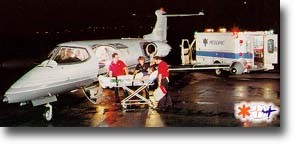
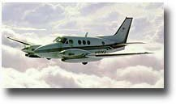
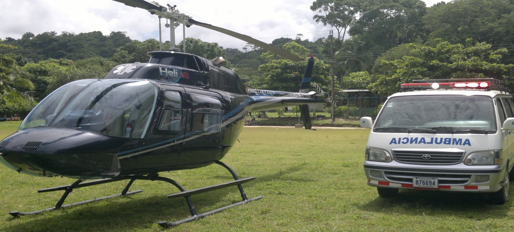

Ambulancia Aérea
Cuando se trata de transportar un paciente en una ambulancia aérea, cada detalle es de extrema importancia y es imprescindible tomar todas las decisiones correctas.
Nos hacemos cargo de todos los detalles, es lo que mejor hacemos, proveemos un servicio de cama-a-cama sin preocupaciones, con la mejor calidad y a precios muy competitivos.
Nuestra dedicación ha hecho una de las compañías de ambulancias terrestres y aéreas líderes en Costa Rica, ahora en Nicaragua Estados Unidos y en el mundo entero.
Nuestro centro de operaciones opera todos los días del año a escala Nacional e Internacional. Cuando ustedes llaman a nuestro centro de operaciones, un experimentado coordinador de servicios de transporte especializado los atenderá y asistirá en determinar todas las necesidades del paciente.
Nuestro servicio 100% sin preocupaciones de cama-a-cama incluye la transportación terrestre, como las ambulancias y las unidades móviles de cuidados intensivos.
Aceptamos cualquier seguro médico pre-aprobado y la mayoría de las tarjetas de crédito.
Personal
Cuando se transporta un paciente en una ambulancia aérea, es muy importante tener el mejor personal médico abordo. Por eso TRANSMEDIC NICARAGUA S.A. y Ambulancia aérea solo emplea a los mejores.
Nuestro personal aeromédico consiste de:
- Enfermeras registradas en emergencias
- Paramédicos con certificación de soporte de vida avanzado
- Terapistas Respiratorios
- Médicos
Todo el personal médico de TRANSMEDIC NICARAGUA S.A. posee un certificado de Fisiología Aeronáutica para asegurar que se le ofrece al paciente el mejor cuidado médico posible al ser transportado por aire.
Antes de todos los transportes médicos, nuestro jefe de Paramédicos o Director Médico, contactará al médico o a la enfermera del paciente para analizar la situación de éste y obtener un reporte médico a fondo, para que, de esta manera, poner a bordo del avión el personal médico más apropiado al igual que el equipo médico necesario.
Acompañante Médico
Nuestro servicio de escolta médica está disponible para aquellos pacientes que puedan viajar en aviones de aerolíneas comerciales, pero que necesiten de supervisión médica durante el vuelo. Proveemos personal y equipo médico certificado para acompañar al paciente a bordo de aviones comerciales, también proveemos soporte terrestre para cuando haya que cambiar de avión en cualquier escala del recorrido. Para mayor información a éste respecto póngase en contacto con nuestras oficinas locales en Managua.
Equipo Médico
TRANSMEDIC NICARAGUA S.A. provee equipo médico de soporte de vida avanzado (A.L.S.) la siguiente es una lista de algunos de estos equipos:
- Monitores cardíacos
- Desfribiladores
- Bombas de infusión
- Oxígeno
- Ventiladores artificiales
- Camilla especial
- Equipos de succión portátiles
- Pulsoxímetros
- Equipos para medir la presión arterial
- Todos los medicamentos necesarios para atender cualquier emergencia
Flota de Ambulancias Aéreas
TRANSMEDIC NICARAGUA S.A. opera diversos tipos de aviones para acomodar las necesidades de cada paciente, los siguientes son algunos de los tipos de aviones utilizados por nosotros:
Vuelos Internacionales
Lear Jets

Contratamos varios modelos de Lear Jets. Lear Jet ha sido el líder indiscutible de alta producción en la industria de ambulancias aéreas.
Aviones Bi-Motores a Hélices
Contratamos una flota de aviones bi-motores de hélices, como los de cabina presurizada Cessna-340 y Cessna-421. También a disposición avión tipo Navajo, Son pequeños pero muy confiables y una excelente elección para aquellos vuelos de cortas distancias.
Rescate y Transporte en Helicóptero
Rescate y Transporte en Helicóptero
Bell 206 es una familia de helicópteros con dos palas en el rotor principal, de uno o dos motores, producida por Bell Helicopter en la fábrica de Minoel, Quebec, Canadá. Originalmente desarrollado para el programa de Helicóptero de Observación Ligero, del ejército de Estados unidos, el 206 no fue seleccionado se rediseño la estructura del 206 y lo comercializó con mucho éxito como helicóptero de cinco plazas bajo el nombre de Bell 206 JET RANGER. El nuevo diseño fue seleccionado por el Ejército y se convirtió en el OH-58 Kiowa.
